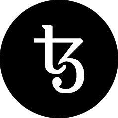

Community Petition StatementCommunity StellungnahmeDéclaration de la communautéЗаявление сообщества

The Tezos Foundation exists to enable the vision outlined in the Tezos Whitepaper. Given the behavior and inaction of the current board, we fail to see how they can satisfy this obligation. We wish the best for Mr. Gevers in his future endeavors, but changes need to be made immediately to the Foundation’s board for it to fulfill its mission. We request that each board member consider the following as it determines the Foundation’s future.
The following are ways in which the Foundation has not met its obligation to advance the Tezos project and support a strong community:
- Critical lack of communication with the contributors, the larger development community, and the founders;
- Failure to fund, support and engage with the developers in order to ready the network for launch;
- Complete lack of management and failure to proceed with the project goals that were stated prior to the ICO;
- Failure of the Foundation to engage and use a public relations firm in a timely manner, and delays in marketing and accruing of goodwill to the Tezos name;
- The allegations of impropriety by Mr. Gevers;
- Mr. Gevers leaking information to the press about internal foundation matters;
- Mr. Gevers’ failure to manage the Foundation in its intended fashion, as outlined by the charter and terms presented to the community. His misgovernance of a Foundation with a massive endowment, and his recent failure in other technology ventures;
The following are the ways in which the community would like to see the situation resolved:
- Regardless of the current state or outcome of the audit, the immediate resignation or dismissal of Mr. Gevers. The Community no longer has confidence in his leadership;
- Immediate clarification of whether Mr. Gevers did or did not attempt to pay himself 750,000 XTZ and whether he represented this bonus as being worth 300,000 CHF;
- Publication to the wider community by the Foundation’s legal counsel of the audit investigating Mr. Gevers’ alleged misbehavior;
- With immediate effect, the disbursement of a sizeable budget to the development team for the completion of network development, test and deployment;
- With immediate effect, the disbursement of a sizeable budget for community program funding, such as, but not limited to, the funding of a bug bounty program, Tezos ancillary utilities such as wallets, delegation and baking software, Validator Audit program, community forums, and other such community projects that have self-funded so far;
- Introduce governance procedures into the Foundation to take into account the voice of community members. The Foundation will work with the community to come up with an acceptable method of making sure that its voice is adequately considered.
The community is looking forward to rebuilding confidence in the Foundation upon Mr Gevers’ departure. We trust in the remaining board members to swiftly take the appropriate action for the good of the community and the future of the Tezos project. Once again, we wish Mr. Gevers well in the future, but the Tezos Foundation is more important than any single person and changes need to be made immediately. As a community we are incredibly optimistic about the potential of Tezos. Arthur and the core team of developers are doing an incredible job of moving work forward despite difficult circumstances. With changes to the board Tezos will move forward and reach the incredible potential that it has to revolutionize the blockchain sector.
Die Stiftung Tezos existiert, um die im Tezos Whitepaper beschriebene Vision zu ermöglichen. Angesichts des Verhaltens und der Untätigkeit des derzeitigen Vorstands, können wir nicht erkennen, wie sie dieser Verpflichtung nachkommen können. Wir wünschen Herrn Gevers das Beste für seine zukünftigen Bemühungen, aber im Stiftungsrat müssen sofort Änderungen vorgenommen werden, damit er seine Mission erfüllen kann. Wir fordern, dass jedes Vorstandsmitglied folgendes berücksichtigt, da dies die Zukunft der Stiftung bestimmt.
Im Folgenden sind die Wege aufgezeigt, auf denen die Stiftung ihrer Verpflichtung zur Förderung des Tezos-Projekts und zur Unterstützung einer starken Gemeinschaft nicht nachgekommen ist:
- Erheblicher Mangel an Kommunikation mit den Mitwirkenden, der grösseren Entwicklungsgemeinschaft und den Gründern;
- Versäumnis, die Entwickler zu finanzieren, zu unterstützen und mit ihnen zusammenzuarbeiten, um das Netzwerk auf den Start vorzubereiten;
- Vollständiges Fehlen des Managements und Scheitern der Fortführung der Projektziele, die vor dem ICO festgelegt wurden;
- Das Versäumnis der Stiftung, rechtzeitig ein PR-Unternehmen zu beauftragen und zu nutzen sowie Verzögerungen bei der Vermarktung und dem Aufbau eines Goodwill gegenüber dem Namen Tezos;
- Die Behauptungen von Herrn Gevers über ein Fehlverhalten;
- Herr Gevers hat die Presse über interne Angelegenheiten der Stiftung informiert;
- Herr Gevers versäumte es, die Stiftung in ihrer beabsichtigten Art und Weise zu führen, wie es in der Charta und den Bedingungen dargelegt ist, die der Gemeinschaft dargelegt wurden. Seine schlechte Leitung einer Stiftung mit einem hohen Stiftungsvermögen und sein jüngstes Scheitern bei anderen Technologieunternehmen.
Im Folgenden werden die Wege aufgezeigt, wie die Gemeinschaft die Situation gelöst haben möchte:
- Unabhängig vom aktuellen Stand oder dem Ergebnis der Untersuchung, der sofortige Rücktritt oder die Entlassung von Herrn Gevers. Die Gemeinschaft hat kein Vertrauen mehr in seine Leitung;
- Sofortige Klärung, ob Herr Gevers 750.000 XTZ an sich selbst zu zahlen versuchte oder nicht und, ob er diesen Bonus mit einem Wert in Höhe von 300.000 CHF dargestellt hat;
- Veröffentlichung, durch die Rechtsberatung der Stiftung an die Öffentlichkeit, über die Untersuchung des vermeintlichen Fehlverhaltens von Herrn Gevers;
- Mit sofortiger Wirkung: Die Auszahlung eines hohen Budgets an das Entwicklungsteam für den Abschluss der Netzwerkentwicklung, des Tests und des Aufbaus;
- Mit sofortiger Wirkung: Die Auszahlung eines hohen Budgets für die Finanzierung von Gemeinschaftsprogrammen, wie, aber nicht beschränkt auf, die Finanzierung eines Fehler-Prämien-Programms, zusätzliche Hilfsprogramme von Tezos wie Brieftaschen, Delegation und Backsoftware, Prüfungsprogramme für Prüfer, Community-Foren und andere derartige Gemeinschaftsprojekte, die sich bisher selbst finanziert haben;
- Die Einführung von Kontroll-Verfahren bei der Stiftung, um die Stimme der Mitglieder der Gemeinschaft zu berücksichtigen. Die Stiftung wird mit der Gemeinschaft zusammenarbeiten, um eine akzeptable Methode zu finden, um sicherzustellen, dass ihre Stimme angemessen berücksichtigt wird.
Die Gemeinschaft freut sich darauf, nach dem Ausscheiden von Herrn Gevers, das Vertrauen in die Stiftung wieder aufzubauen. Wir vertrauen darauf, dass die verbleibenden Vorstandsmitglieder zügig entsprechende Schritte zum Wohle der Gemeinschaft und für die Zukunft des Tezos-Projekts unternehmen. Wir wünschen Herrn Gevers auch in Zukunft alles Gute, aber die Tezos-Stiftung ist wichtiger als eine einzelne Person und es müssen sofort Änderungen vorgenommen werden. Als Gemeinschaft sind wir unglaublich optimistisch, was das Potenzial von Tezos angeht. Arthur und das Kernteam der Entwickler leisten unglaubliche Arbeit, um die Arbeit trotz schwieriger Umstände voranzutreiben. Mit den Veränderungen im Vorstand wird Tezos weiter voranschreiten und das erstaunliche Potenzial erreichen, das das Unternehmen hat, um den Blockchain-Sektor grundlegend zu verändern.
La Fondation Tezos existe afin de rendre possible la vision décrite dans le Livre blanc de Tezos. Étant donné le comportement et l'inaction du conseil actuel, nous ne voyons pas comment ils peuvent satisfaire à cette obligation. Nous souhaitons le meilleur à M. Gevers dans ses projets futurs, mais des changements doivent être apportés immédiatement au conseil d'administration de la Fondation pour lui permettre de remplir sa mission. Nous demandons à chaque membre du conseil de tenir compte des éléments suivants, car ils déterminent l'avenir de la Fondation.
Voici en quoi par lesquels la Fondation n'a pas respecté son obligation de faire avancer le projet Tezos et de soutenir une communauté forte :
- Manque critique de communication avec les contributeurs, la communauté de développement et les fondateurs ;
- Défaut de financement, de soutien et d'engagement avec les développeurs afin de préparer le lancement du réseau ;
- Manque total de gestion et incapacité à poursuivre les objectifs du projet énoncés avant l'ICO ;
- Défaut de la Fondation d'engager et d'utiliser une agence de relations publiques en temps opportun, et retards dans la commercialisation et l'accumulation de bonne volonté au sujet du nom de Tezos ;
- Allégations d'irrégularités commises par M. Gevers ;
- M. Gevers a divulgué des informations à la presse sur des questions internes relatives à la fondation ;
- Échec de M. Gevers à gérer la Fondation de la façon prévue, telle que décrite dans la charte et les conditions présentées à la communauté. Sa mauvaise gouvernance d'une Fondation bénéficiant d'une importante dotation, et son échec récent dans d'autres entreprises technologiques.
Voici les façons dont la communauté aimerait que la situation soit résolue :
- Indépendamment de l'état actuel ou du résultat de l'audit, la démission ou le renvoi immédiat de M. Gevers. La Communauté n'a plus confiance en son leadership ;
- Préciser immédiatement si M. Gevers a ou non tenté de se payer 750 000 XTZ et s'il a présenté cette prime comme valant 300 000 CHF ;
- Publication auprès de la communauté élargie par le conseiller juridique de la Fondation de l'audit enquêtant sur la mauvaise conduite présumée de M. Gevers ;
- Avec effet immédiat, le décaissement d'un budget important à l'usage de l'équipe de développement pour l'achèvement du développement, des tests et du déploiement du réseau ;
- Avec effet immédiat, le décaissement d'un budget important pour le financement des programmes communautaires, comme le financement d'un programme de primes, les services auxiliaires de Tezos comme les portefeuilles, les logiciels de délégation et le logiciels bancaires, le programme Validator Audit, les forums communautaires, et d'autres projets communautaires de ce type qui se sont autofinancés jusqu'à présent ;
- Introduire des procédures de gouvernance au sein de la Fondation afin de prendre en compte la voix des membres de la communauté. La Fondation travaillera avec la communauté pour trouver une méthode acceptable permettant de s'assurer que sa voix est prise en compte de manière adéquate.
La communauté a hâte de rétablir sa confiance dans la Fondation après le départ de M. Gevers. Nous espérons que les autres membres du conseil d'administration prendront rapidement les mesures appropriées pour le bien de la communauté et pour l'avenir du projet Tezos. Encore une fois, nous souhaitons bonne chance à M. Gevers à l'avenir, mais la Fondation Tezos est plus importante que toute autre personne et des changements doivent être apportés immédiatement. En tant que communauté, nous sommes extrêmement optimistes quant au potentiel de Tezos. Arthur et l'équipe de développeurs font un travail incroyable pour faire avancer les choses malgré les circonstances difficiles. Avec les changements apportés au conseil, Tezos ira de l'avant et révélera le fantastique potentiel qu'il possède pour révolutionner le secteur de la blockchain.
Фонд Tezos существует, чтобы обеспечить видение, изложенное в Техническом документе Tezos. Учитывая поведение и бездействие нынешнего правления, мы не можем понять, как они могут удовлетворить это обязательство. Мы желаем лучшего для г-на Геверса в его будущих начинаниях, но необходимо немедленно внести изменения в правление Фонда, чтобы оно выполнило свою миссию. Мы просим каждого члена совета рассмотреть следующее, поскольку оно определяет будущее Фонда.
Ниже приводятся способы, с помощью которых Фонд не выполнил своё обязательство продвигать проект Tezos и поддерживать сильное сообщество:
- Критическое отсутствие связи с участниками, более крупным сообществом разработчиков и учредителями;
- Неспособность финансировать, поддерживать и взаимодействовать с разработчиками, чтобы подготовить сеть к запуску;
- Полное отсутствие управления и невыполнение целей проекта, которые были заявлены перед ICO;
- Неспособность Фонда своевременно привлекать и использовать фирму по связям с общественностью, а также задержки с маркетингом и накоплением доброй воли имени Тезоса;
- Утверждения о непристойности г-на Геверса;
- Г-н Геверс передает информацию в прессу о вопросах внутренней основы;
- Неспособность г-на Геверса управлять Фондом по-своему, как это предусмотрено уставом и условиями, представленными сообществу. Его неправильное управление Фондом с огромным пожертвованием и его недавняя неудача в других технологических проектах;
Ниже приводятся способы, с помощью которых сообщество хотело бы, чтобы ситуация была решена:
- Независимо от текущего состояния или результатов проверки, немедленная отставка или увольнение г-на Геверса. У Сообщества больше нет уверенности в его лидерстве;
- Непосредственное разъяснение того, действительно ли г-н Геверс сделал или не пытался заплатить себе 750 000 XTZ, и представил ли он этот бонус в размере 300 000 швейцарских франков;
- Публикация в более широком сообществе юридического консультанта Фонда по аудиту, в котором рассматривается предполагаемое неправильное поведение г-на Геверса;
- С немедленным вступлением в силу выделение значительного бюджета команде разработчиков для завершения разработки, тестирования и развертывания сети;
- С немедленным вступлением в силу выделение значительного бюджета для финансирования программ сообщества, такого как, помимо прочего, финансирование программы подсчёта ошибок, вспомогательные утилиты Tezos, такие как кошельки, программное обеспечение для делегирования, программа проверки валидатора, форумы сообщества, и другие подобные проекты сообщества, которые до сих пор были самофинансируемыми;
- Внедрить процедуры управления в Фонд, чтобы учесть голос членов сообщества. Фонд будет работать с сообществом, чтобы придумать приемлемый способ убедиться, что его голос адекватно рассмотрен.
Сообщество с нетерпением ожидает восстановления доверия к Фонду после отъезда г-на Геверса. Мы надеемся, что оставшиеся члены Совета быстро предпримут соответствующие действия на благо сообщества и будущее проекта Tezos. Ещё раз, мы желаем г-ну Геверсу хорошо в будущем, но Фонд Tezos более важен, чем любой человек, и изменения должны быть сделаны немедленно. Как сообщество мы невероятно оптимистично оцениваем потенциал Tezos. Артур и основная команда разработчиков делают невероятную работу по продвижению вперед, несмотря на сложные обстоятельства. С изменениями в блокчейне Tezos будет продвигаться вперёд и достигать невероятного потенциала, который произведёт революцию в данном направлении.
Signed byUnterzeichnet vonSigné parПодписано MembersMitgliedermembresчленами сообщества
| NameNameNomИмя | OrganizationOrganisationOrganisationОрганизация | RoleFunktionRôleДолжность |
|---|